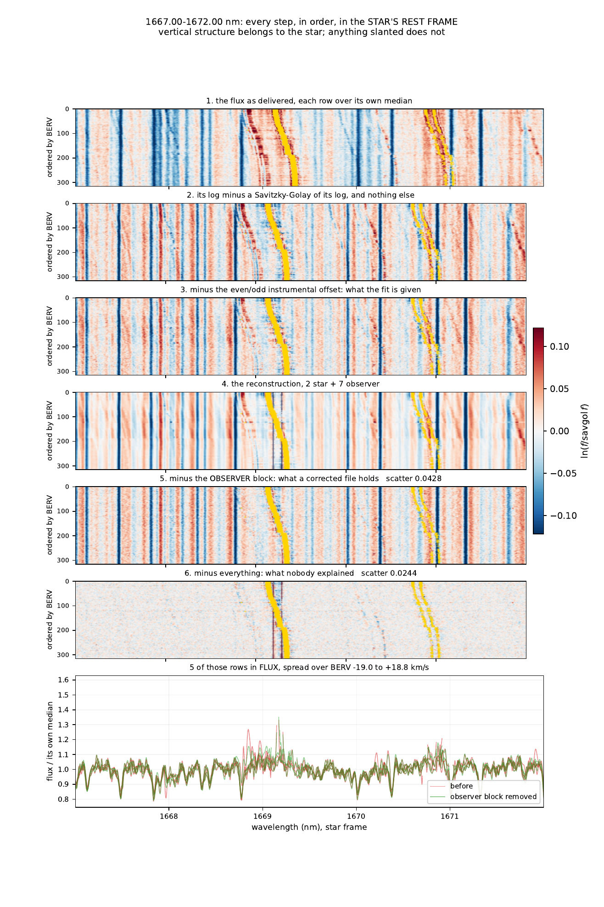
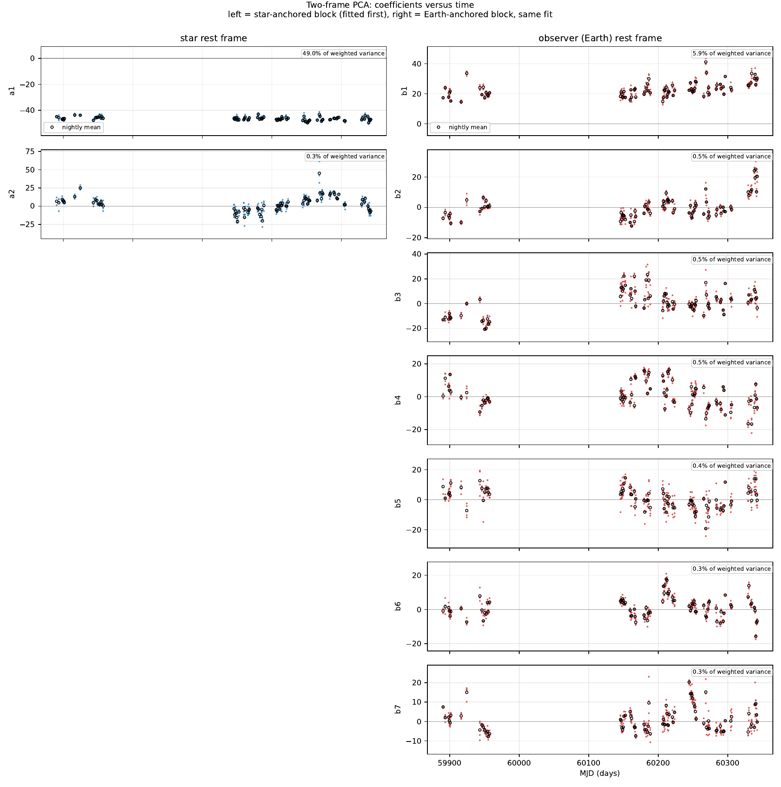
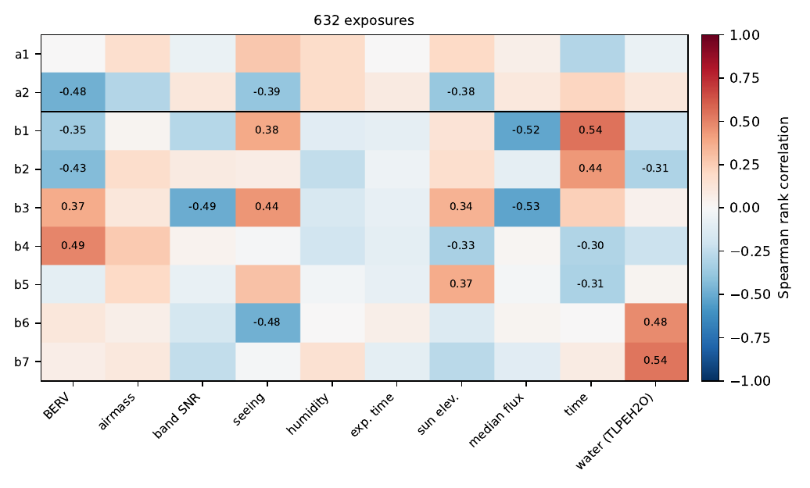

The idea
Over a year of observing, the barycentric velocity sweeps by tens of kilometres per second. That is enough to separate the star from the atmosphere, but only if the model is told which of the two travels.
y_n = S_n P a_n + Q b_n
S_n is an exact translation by that exposure's own
barycentric velocity, P is the basis that follows the star
and Q the one that stays put on the detector. Both are
solved for together, under weights taken from the noise you can
measure rather than the noise a photon model claims. The two
disagree by a factor of fifty at the red end of a SPIRou spectrum, and
for a reason worth stating: past about 2200 nm the thermal
background dominates. Those are photons and they were counted, so they
arrive with their own Poisson noise, and the pipeline subtracts their
mean and not their variance. The noise stays in the data after
the signal it belonged to has gone, so a photon model computed from
what is left is describing a spectrum that was never recorded, and it
reports the noisiest part of the detector as the quietest. Measuring
the sample-to-sample scatter instead costs nothing and cannot make that
mistake.
Nothing is taken out before the fit except one instrumental offset. No median template, no mean spectrum removed in front. Whatever is subtracted early is outside the model, and the correction removes components, so an early subtraction would be fitted by nothing and removed from nothing.
Every step, on one page
1667 to 1672 nm of TOI-2120, 321 SPIRou exposures, drawn in the star's rest frame with the rows ordered by barycentric velocity. Vertical structure belongs to the star; anything slanted does not. The OH airglow runs diagonally through the first two panels and is gone from the third.

What the coefficients do in time
Two components in the star's rest frame, seven in the observer's, one point per exposure over 452 days.

And what they follow
A component carries no label. That one varies is a result; that it varies with the precipitable water column says plainly what it is describing. Every run writes this matrix without being asked, because it is the diagnostic that catches a "stellar" component quietly modelling the sky.

Installing it
A conda environment, described by the repository itself:
git clone https://github.com/eartigau/pca2d_preclean.git
cd pca2d_preclean
conda env create -f environment.yml
conda activate pca2d-preclean
That environment holds both codes: this one and
LBL,
which is what the corrected spectra exist to be fed to. Having to
deactivate one to run the other is how a t.fits gets measured by the
wrong version of something, so afterwards
pca2d-preclean, lbl_setup and
lbl_find are all on the same path.
It is why the versions are nailed down rather than floored. LBL pins
its dependencies exactly, numpy==2.3.3,
astropy==7.2.0, scipy==1.17.0 and the rest,
and asks for python 3.12; environment.yml repeats those
pins so that conda installs them and pip finds them already
satisfied. Only lbl itself, which is not on PyPI, this
package in place, and one PyPI-only dependency come through pip, so the
two package managers never fight over numpy. Check the install with
./check.sh: 83 tests, under a second, no file and no
network access.
Running it
Spectra go in data/<object>/ under the input root and
everything a run writes goes under the output root, so the archive it
reads is never the folder it writes to. Both are named in
config.yaml. Then:
pca2d-preclean --object TOI-2120
That is the whole interface. The instrument is read from the
INSTRUME keyword of the files, never chosen on a command
line, because reading the wrong extension raises no error: it returns
different photons. Four stages, each announcing how long it took, with
a progress bar while it works. On 321 SPIRou exposures the whole run
takes about forty minutes, two thirds of it in the fit.
domain.smart_dv: true takes the grid step from the data
rather than from the file: the finest pixel in the first spectrum,
sampled at 70% of its own width, which is all a resampling has to
guarantee. SPIRou pixels are about 2.27 km/s, so 955 to
2500 nm goes from 577,002 samples at dv: 0.5 to
182,596, and every array the run allocates with it. With it on,
domain.dv is not read at all, and the run says so on the
line where it announces the domain.
Adding a spectrograph
A block in config.yaml, not a line of code:
instruments:
YOURS:
extensions:
flux: FluxAB
wave: WaveAB
blaze: BlazeAB
recon: Recon
sky: OHLine
domain:
wave_min: 955.0
wave_max: 2500.0
wave0: 955.0The wavelength solution comes from the extension, never from header polynomials, and the blaze from the blaze extension of the same file.
What comes out, and what it is for
A run leaves three things, and the third is the deliverable.
- outputs/<object>/<M>-<N>/<object>_<M>-<N>.pdf — one multipage document, the resolved parameters as selectable text first, then every figure, with bookmarks. On TOI-2120 that is 35 pages.
- outputs/<object>/<M>-<N>/ —
the bases and coefficients as
fit.npzandtwoframe_components.fits, the coefficients as CSV, andresolved_config.yaml: exactly what ran, sitting next to what it produced. - outputs/<object>/<M>-<N>/corrected/ — the corrected spectra, one per input file.
- outputs/<object>/<M>-<N>/run_lbl.py and lbl_config.yaml — LBL set up on both sets of spectra, ready to run.
Those corrected files are meant to be fed to LBL, the line-by-line radial velocity code. They are still t.fits: the flux has been divided by the observer-frame model and every other extension, including the wavelength solution and the blaze, is copied through untouched. LBL reads them exactly as it reads the originals, with the same instrument class, so the comparison that matters is one command apart: the velocities before, the velocities after, and it is one command apart in the same environment, since LBL is installed in it.
The lbl stage makes that command. It never sets LBL up on
the corrected files alone: it puts two objects side by
side in one LBL tree, TOI-2120 symlinked to the spectra as
delivered and TOI-2120_PCA2D_2-7 to what the run
corrected, each building its own template, and writes the two files
that run them — lbl_config.yaml in LBL's own keys and
run_lbl.py, an ordinary wrap script with both objects in
its rparams. The corrected name carries the component
counts because LBL globs a science folder, so two corrections in one
folder would be measured as one series without a word. Running LBL is
hours, so the stage prepares and says what to run;
lbl.run: true or --run-lbl has it run.
Which LBL instrument a spectrograph is comes from its block in
config.yaml: LBL calls NIRPS NIRPS_HA or
NIRPS_HE by the mode it was observed in, and the wrong one
raises no error, it returns another instrument's velocities.
Only the observer block is divided out. The star components stay in, deliberately: with no median template the first star component is the star, and dividing it out would flatten the very spectrum LBL is about to measure. Samples the airglow drowned are set to NaN rather than left in, so LBL is never handed data the model never saw.
Access
The repository is private for the moment. If you would like access, or would like to try it on a dataset of your own, contact Étienne Artigau (Université de Montréal). This page stays public so the method and its figures can be pointed at.